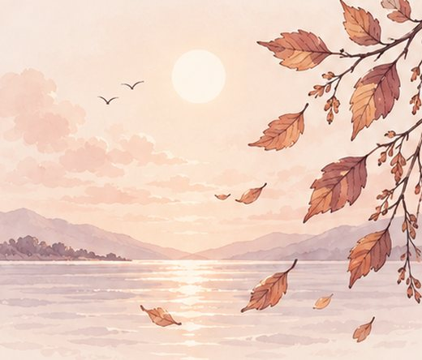
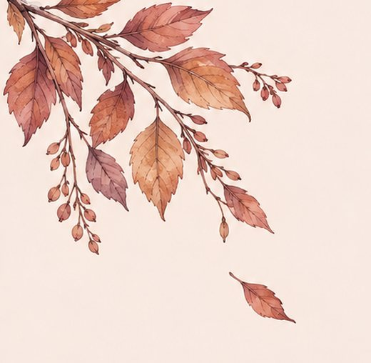
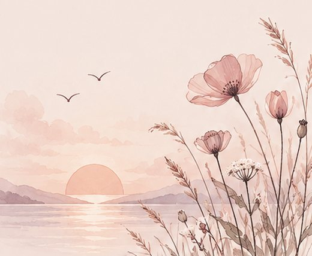
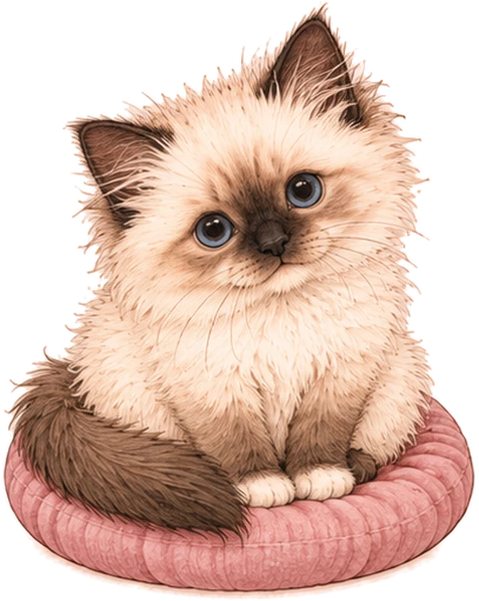
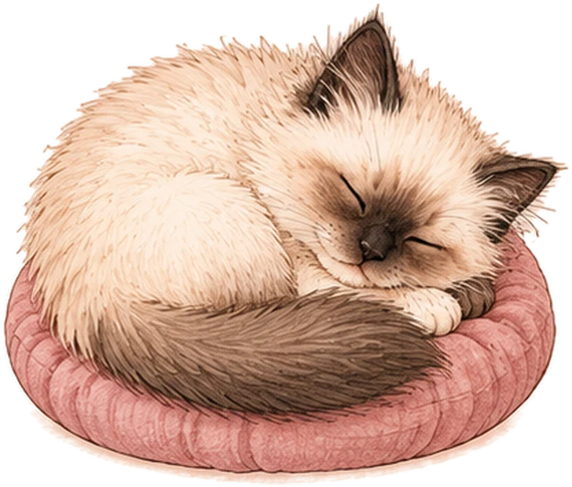
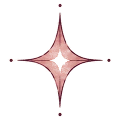
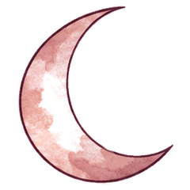

Planche d'illustrations
Tes scènes à l'aquarelle, intégrées à l'ouverture et à l'accueil. Choisis un moment, une saison et une humeur pour voir le rendu sur les deux écrans.
En situation

lundi 26 octobre
Bonjour Elisa
Aujourd'hui, un petit pas suffit.
Ouverture
lundi 26 octobre
Bonjour Elisa

Un petit pas aujourd'hui compte plus qu'un grand plan pour demain.
touche la carte pour un autre motpour toi, cet après-midiDemain, ta séance · 18 h
Tes notes sont prêtes pour demain.
Tu veux préparer ce que tu aimerais lui dire ?
Comment te sens-tu ?

La plage
2019 · Les années Lyon
Je suis capable de créer des moments doux.
avec Léa · Lyon
relu le 12 mars
Ajouter
C'est noté.
Accueil · · · · · ·
Première connexion
Bienvenue dans ton espace intime
Ton journal, rien qu’à toi.
Comment t'appelles-tu ?
Anniversaire facultatif
Tu es accompagnée par un·e psy ?
tu pourras changer ça à tout moment
Choisis ton code
4 chiffres, rien que pour toi
✦ C'est noté
Ouvrir avec Face ID ?
ton code reste toujours possible

On fait le tour ?
Je te montre où tout se trouve, directement sur ton accueil.
8 caractères minimum
Content de te revoir, Elisa.
Première connexion · glisse depuis le bord gauche pour revenir
Page du jour
MON JOURNAL
✦Mon journal ·
lundi 26 octobre
Déjà déposé
Ton point du jour
Relier cette page à…
Comment te sens-tu ?
NeutreComment te sens-tu ?
un appui : un peu · deux : beaucoup
Cher journal,
TAILLE
STYLE
SURLIGNEUR
COULEUR D’ENCRE
VIDE TA TÊTE

inspire…Page du jour · compagnon : · · · ·
Ma vie
Moment : · · ·
FAIRE CONNAISSANCE
✦J’aimerais te connaître un peu
Quelques questions sur ta vie, pour que je puisse mieux t’écouter. Tu choisis quand.
Tu choisis d’abord ton compagnon, celui qui t’accompagnera.
Il te pose des questions, une à la fois, sur cinq chapitres : moi aujourd’hui, mes proches, mon passé, mon intérieur, notre histoire.
Tu réponds à ton rythme : tu peux passer, arrêter, reprendre quand tu veux. Tout reste entre nous.
Ma vie · introduction (première fois)
Qui va t’accompagner ?
LE CHAT
doux, un peu mystérieux
Ma vie · choisir son compagnon
FAIRE CONNAISSANCE
✦ou raconte tout à ·
Ma vie · les quatre chapitres
MOI AUJOURD’HUI
✦Ma vie · chapitre « Moi aujourd’hui » · accord : · · ·
Ma vie · avec ChatGPT ou Claude · · · ·
CE QUE J’AI RETENU
✦il manque encore quelques infos
Ma vie · ce que j’ai retenu
PROFIL
✦
Elisa

MOI AUJOURD’HUI
✦MES PROCHES
✦AMOUR ET FAMILLE
AMIS
MON PASSÉ
✦MA BOÎTE À SOUVENIRS
MA BOÎTE À SOUVENIRS
MA BOÎTE À SOUVENIRS
MA BOÎTE À SOUVENIRS
MA BOÎTE À SOUVENIRS
MA BOÎTE À SOUVENIRS
MON INTÉRIEUR
✦toucher une carte pour la retourner
NOTRE HISTOIRE
✦complète à 0 %
ou avec ·
AJOUTER UN PROCHE
AJOUTER UN SOUVENIR
AJOUTER UN PASSAGE
MA CARTE
AJOUTER UN MOMENT
UN MOMENT
Profil · Ma vie, Calendrier, Souvenirs, Pages secrètes ·
CE QUE JE T’AI CONFIÉ
✦MOI AUJOURD’HUI
CHEZ TOI
Pour commencer… tu habites où ? Raconte-moi un peu ton coin.
À Toulouse, depuis six mois.
Oh, tout nouveau ! Qu’est-ce qui t’a fait venir jusque-là ?
Je suis venue pour Thomas.
Et tu t’y sens bien ?
Je me cherche encore un peu.
Qu’est-ce qui te manque le plus de Lyon ?
Mes amis, et les cafés du Vieux Lyon.
TRAVAIL OU ÉTUDES
Et toi, tu fais quoi de tes journées ?
Je cherche un métier qui me ressemble, dans la création.
Si tout était possible, tu ferais quoi ?
Illustratrice, à mon compte.
TES ANIMAUX
Et dis-moi… il y a des petites pattes chez toi ?
Oui, Réglisse, un chat birman.
Il est comment, de caractère ?
Câlin et jaloux.
Depuis quand Réglisse est avec toi ?
Depuis ses 3 mois, il y a 3 ans.
MES PROCHES
TA FAMILLE
Tu viens d’une famille plutôt comment ?
Petite et soudée.
Il y a quelqu’un d’autre dans ta famille qui compte beaucoup ?
Mamie. C’est mon refuge.
MON PASSÉ
LA PETITE TOI
Petite, tu étais comment ?
Rêveuse, toujours dans les livres.
Un objet de ton enfance que tu as gardé ?
Le Petit Prince que Mamie me lisait.
Rien ici pour l’instant.
Ma vie · ce que je t’ai confié
RÉGLAGES
✦Réglages
MON COMPTE
✦Réglages · mon compte
AIDE ET CONTACT
✦Aide et contact
CALENDRIER
✦Calendrier
MON ESPACE PSY
✦Espace Psy · · · · ·
MES PETITS PAS
✦Mes petits pas ·
MES SOUVENIRS
✦Mes souvenirs
Widgets du téléphone · · · ·
Widgets d’écriture · · ·
Scènes de l'accueil
Scènes de l'ouverture
Ressentis des rendez-vous
Coins fleuris
Réservés aux autres écrans (journal, souvenirs, psy).